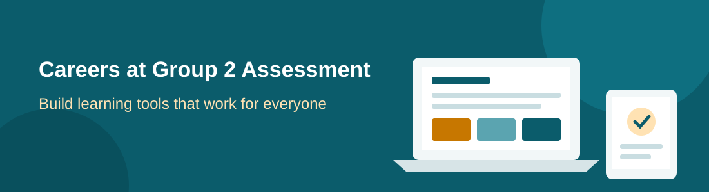
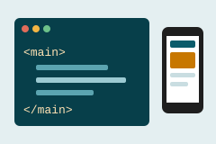
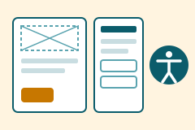

Join Our Team

Group 2 Assessment builds online learning tools for schools and TAFEs across Australia. We want every learner, whatever their ability or background, to be able to use our platforms. We are hiring for the roles below.
Front-End Web Developer

Build and maintain the student-facing parts of our learning platform, LearnLoop. You will turn designs into fast, accessible pages that work on any device, including the older laptops and low-bandwidth connections many of our schools rely on.
Key responsibilities
- Develop responsive interfaces using semantic HTML5 and modern CSS.
- Make sure new features meet WCAG 2.2 level AA.
- Work with designers and teachers to improve lesson and quiz pages.
- Review code and write documentation for the front-end team.
- Fix bugs reported by students, teachers and school IT staff.
Requirements
Essential
- 2+ years of professional front-end development experience.
- Strong HTML5, CSS3 and JavaScript skills.
- Working knowledge of web accessibility and testing tools (e.g. WAVE, axe).
- Experience using Git and an agile tool such as Jira.
Preferable
- Experience with React or Vue.
- Knowledge of learning management systems such as Moodle or Canvas.
- A degree in IT, Computer Science or a related field.
UX & Accessibility Designer

Design learning experiences that are simple, inclusive and enjoyable. You will research how students and teachers use our tools, then design and test improvements with them, including learners who use screen readers and other assistive technology.
Key responsibilities
- Plan and run user research with students, teachers and parents.
- Create wireframes, prototypes and final designs in Figma.
- Keep our design system's colours, type and components accessible.
- Run accessibility reviews before each release.
Requirements
Essential
- 3+ years of experience in UX or product design.
- A portfolio showing your research and design process.
- Sound knowledge of WCAG and inclusive design.
- Clear written and spoken communication.
Preferable
- Experience designing for education or young people.
- Basic HTML and CSS skills.
- A current Working with Children Check.
Inclusive Employment
Group 2 Assessment acknowledges the Wurundjeri Woi-wurrung people of the Kulin Nation, the Traditional Owners of the land where our office stands, and pays respect to Elders past and present.
We strongly encourage Aboriginal and Torres Strait Islander people to apply for these roles. Our tools are used by First Nations students in schools across Australia, and we believe our team should reflect and understand the communities we serve. We are happy to discuss flexible arrangements for cultural and community obligations.
We include this statement because learning tools built without First Nations voices can leave First Nations learners behind.